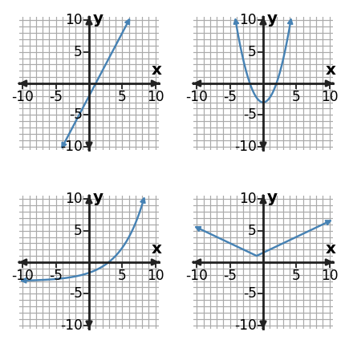

Classroom Copy 1
Station 2 • Set 1
Problem 5
An equation is $y=3|x+1|-2$, while a low-resolution plot looks like two straight pieces. What family is supported most strongly?
Problem 6
Classify the function family represented by the table using the strongest numerical pattern in the values as evidence.
| x | y |
|---|---|
| 0 | 1 |
| 1 | 4 |
| 2 | 16 |
| 3 | 64 |
Problem 7
Sort the top-right and bottom-right graphs by family. What feature separates the two symmetric graphs?

Problem 8
Compare the top-left and bottom-left graphs. Which is linear and which is exponential, and what feature distinguishes them?
